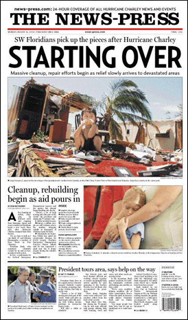

| HURRICANE CHARLEY '04: Saturday, August 15-22 The aftermath. Each day we put out a hurricane-dominated newspaper - usually with 8 to 16 full pages of hurricane coverage. Designers were working 14- to 18-hours days - even while trying to clean up their homes and neighborhoods. The design of each hurricane section was a little more sophisticated and more specific each day. Large photos and short, anecdotal stories still dominated. The readers were too busy with recovering and rebuilding to read long essays. The pages reflected the need to see what was happening in the community and the desire for easy to use help and coping information. The News-Press' Web site became a clearinghouse for communication - the site allowed family members to coordinate with relatives continents away. |  |
||
| [ BACK | NEXT ] For full size pages: [ DOWNLOAD PDFs ] | |||